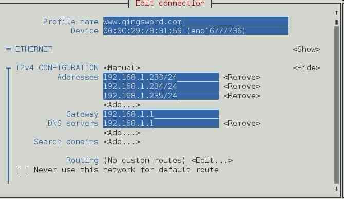

[RHEL]-16-使用Apache服务部署网站
引言
这篇文章将详解RHEL系统中Apache服务的部署与三种主机服务（基于IP的虚拟主机，基于域名的虚拟主机，基于端口号的虚拟主机）的搭建。
文章目录
- 0×1.Apache安装与配置
- 0×2.SElinux子系统对Apache配置的限制
- 0×3.使用Apache配置虚拟主机服务
- a.基于IP地址的虚拟主机
- b.基于域名的虚拟主机
- c.基于端口号的虚拟主机
0×1.Apache安装与配置
实验环境：
安装了RHEL7系统的虚拟机，模拟服务器，IP 192.168.1.103/24；
模拟外部访问的主机Ubuntu，模拟客户机，IP 192.168.1.105/24；
两台主机处于同一局域网中，并能够互相ping通；
Apache在RHEL7中默认没有安装，在配置好yum源后，可以使用下面的命令安装并设置成开机启动：
#安装httpd服务 [root@qingsword.com ~]# yum install -y httpd #安装完成后，启动服务 [root@qingsword.com ~]# systemctl start httpd #设置成开机自启动，想移除httpd的开机自启动，只需要将enable改为disable即可 [root@qingsword.com ~]# systemctl enable httpd
Ps：服务启动成功后在服务器浏览器上自己能访问自己，但局域网中的客户机无法打开103默认页面，这是因为RHEL的iptables防火墙的原因，如果懂iptables防火墙的朋友可以将httpd的80端口加到防火墙的配置中，并允许所有外部的访问，本例直接使用"iptables -F"清空防火墙的规则，之后客户机就能顺利访问服务机的默认页面了。
Apache有下面这几个重要的文件和文件夹：
# /etc/httpd/ 服务配置主目录 # /etc/httpd/conf/httpd.conf 服务主配置文件（重要） [root@qingsword.com ~]# ls /etc/httpd/ conf conf.d conf.modules.d logs modules run # /var/log/httpd/access_log 服务访问日志 # /var/log/httpd/error_log 服务错误日志 [root@qingsword.com ~]# ls /var/log/httpd/ access_log error_log # /var/www/html/ 网站默认的根目录（可以在httpd.conf主配置文件中修改） [root@qingsword.com ~]# ls -dl /var/www/html/ drwxr-xr-x. 2 root root 6 Jul 18 11:30 /var/www/html/
使用vim打开/etc/httpd/conf/httpd.conf服务主配置文件，内容非常之多，但实际应用中能够用到的重要参数主要有下面这几个：
[root@qingsword.com ~]# vim /etc/httpd/conf/httpd.conf #服务主目录位置 ServerRoot "/etc/httpd" #管理员邮箱地址，当网站出现问题时，错误信息中会携带这个邮箱地址 ServerAdmin root@localhost #服务是以哪个用户和用户组运行的 User apache Group apache #服务默认监听的端口号 Listen 80 #网站默认的根目录地址 DocumentRoot "/var/www/html" # Relax access to content within /var/www. #对包含网站根目录的目录做权限设置，保持原样即可，如果更改了上面的DocumentRoot地址，也需要更改下面的地址，稍后会实例演示 <Directory "/var/www"> AllowOverride None # Allow open access: Require all granted </Directory> # Further relax access to the default document root: #对网站根目录的权限设置，建议去掉Options参数中的Indexes权限，当目录中没有找到默认页面时，这个权限会将目录中所有文件都遍历显示出来，这样非常的不安全 <Directory "/var/www/html"> Options Indexes FollowSymLinks AllowOverride None Require all granted </Directory> #DirectoryIndex可以设定网站默认访问的文件名称，如果客户端仅输入一个IP或域名，httpd服务就会查找网站根目录中的index.html文件，并将它作为默认的主页，可以用逗号分隔添加多个默认主页，httpd服务会按照先后顺序去查找并且调用（即找到一个文件后，立即返回，并结束查找） <IfModule dir_module> DirectoryIndex index.html </IfModule> #相对于主配置文件的错误日志文件路径，实际上在/etc/httpd/中的logs文件夹只是个软连接，指向了/var/log/httpd/，所以这里指定的错误日志文件，就是/var/log/httpd/error_log ErrorLog "logs/error_log"
了解了上面这些常用配置后，可以尝试着往网站根目录写入一个"index.html"，根据上面的配置，我们刷新页面后，就能够看到默认主页中的内容了：
[root@qingsword.com ~]# echo "www.qingsword.com" > /var/www/html/index.html
0×2.SElinux子系统对Apache配置的限制
SElinux子系统是美国国防部开发的，它制定了一套详细的标准，它限制了每个服务所能访问的文件及其对应的端口，如果这些文件或端口号发生了变化，就会被SElinux子系统拒绝访问，下面会分别尝试着修改httpd主配置文件中的网站目录以及httpd对应的端口号，来测试SElinux，并且提供解决方案：
实例一：修改默认网站根目录：
#编辑主配置文件，修改DocumentRoot位置以及后面的两个目录路径如下 [root@qingsword.com ~]# vim /etc/httpd/conf/httpd.conf #将根目录修改成/home/www DocumentRoot "/home/www" # Relax access to content within /var/www. #修改对应的父目录的权限以及根目录的权限 <Directory "/home"> AllowOverride None # Allow open access: Require all granted </Directory> # Further relax access to the default document root: <Directory "/home/www"> Options FollowSymLinks #去掉了Indexes AllowOverride None Require all granted </Directory> #创建出对应目录并修改权限为755 [root@qingsword.com ~]# mkdir -p /home/www [root@qingsword.com ~]# chmod 755 /home/www [root@qingsword.com ~]# ls -dl /home/www drwxr-xr-x. 2 root root 6 Nov 24 00:00 /home/www #创建默认的主页文件 [root@qingsword.com ~]# echo "www.qingsword.com /home/www/index.html" > /home/www/index.html #需要重启httpd服务 [root@qingsword.com ~]# systemctl restart httpd
重启服务后，从客户端访问服务端网页的时候，发现看到的是默认页面，并不是我们上面修改的默认主页，这是因为我们虽然修改了配置文件指向了新的目录，但因为SElinux是启动的，而新建的网站根目录与原来的默认根目录的"安全上下文"并不相同，所以阻止了访问：
#查看SElinux的启动状态 [root@qingsword.com ~]# getenforce Enforcing #SElinux的配置文件，可以设置三种模式 [root@qingsword.com ~]# more /etc/selinux/config # enforcing - 启动模式，会拦截服务的不合法请求 # permissive - 忽略模式，遇到不合法请求仅给出警告 # disabled - 完全关闭 SELINUX=enforcing SELINUXTYPE=targeted #在大多数文档或工作中，因为程序员不太了解SElinux，都是直接通过下面的命令（或修改上面的配置文件），将SElinux关闭，大家可以尝试着使用这种方法，会发现客户端刷新页面后，就能访问我们修改的主页了 [root@qingsword.com ~]# setenforce 0 #但现在我们需要在SElinux开启的情况下达到能够访问修改后的根目录的效果，所以，使用下面的命令，保证SElinux处于开启状态 [root@qingsword.com ~]# setenforce 1 #首先，查看下原默认根目录的"安全上下文"，使用ls添加-Z参数来查看，注意到输出的"httpd_sys_content_t"这一段，这就是这个文件夹的默认安全上下文，只需要将新的根目录的安全上下文改成与这个相同即可 [root@qingsword.com ~]# ls -ldZ /var/www/html drwxr-xr-x. root root system_u:object_r:httpd_sys_content_t:s0 /var/www/html #新目录的安全上下文如下 [root@qingsword.com ~]# ls -ldZ /home/www drwxr-xr-x. root root unconfined_u:object_r:home_root_t:s0 /home/www #将新根目录的"安全上下文"修改成"httpd_sys_content_t" # -a 新增或修改 # -t 修改后的类型 #注意：目录路径末尾不能有"/"否则会报错（例如/home/www/就是错的，必须写成/home/www） #下面的两条命令将/home/www目录以及目录中的所有文件的安全上下文都修改成"httpd_sys_content_t" [root@qingsword.com ~]# semanage fcontext -a -t httpd_sys_content_t /home/www [root@qingsword.com ~]# semanage fcontext -a -t httpd_sys_content_t /home/www/* #修改完成后，使用restorecon命令刷新目录的安全上下文（立即生效，如果不使用这条命令，上面的修改不会立刻生效） # -R 对目录进行递归处理 # -v 显示详细信息 #从输出中可以看到，新目录的安全上下文已被替换成功 [root@qingsword.com ~]# restorecon -Rv /home/www restorecon reset /home/www context unconfined_u:object_r:home_root_t:s0->unconfined_u:object_r:httpd_sys_content_t:s0 restorecon reset /home/www/index.html context unconfined_u:object_r:home_root_t:s0->unconfined_u:object_r:httpd_sys_content_t:s0
此时，再次从客户端访问192.168.1.103就能够看到我们创建的默认主页了。
Ps：以后对任何服务的默认路径的修改，如果SElinux做出了限制，都可以使用相同的方法，首先查看默认路径的安全上下文，然后将其替换到新目录上，这样就不需要关闭SElinux了，SElinux的配置虽然繁琐，但确实提高了系统的安全性。
实例二：修改默认网站服务端口号
#将httpd服务默认的端口号从80，修改成2333 [root@qingsword.com ~]# vim /etc/httpd/conf/httpd.conf Listen 2333 #重启httpd服务的时候确报错了 [root@qingsword.com ~]# systemctl restart httpd Job for httpd.service failed. See 'systemctl status httpd.service' and 'journalctl -xn' for details. #这是因为，SElinux限制了httpd的默认端口号，当使用一个未定义的端口号时被SElinux阻止了，可以通过下面的方法查看和添加 #http_port_t中所包含的端口都可以作为httpd对外服务端口，但却没有我们定义的2333 [root@qingsword.com ~]# semanage port -l | grep http http_cache_port_t tcp 8080, 8118, 8123, 10001-10010 http_cache_port_t udp 3130 http_port_t tcp 80, 81, 443, 488, 8008, 8009, 8443, 9000 pegasus_http_port_t tcp 5988 pegasus_https_port_t tcp 5989 #将2333添加到http_port_t中（如果要删除这个端口，就将下面参数中的-a替换成-d） [root@qingsword.com ~]# semanage port -a -t http_port_t -p tcp 2333 #再次重启服务，一切正常，现在就能够使用192.168.1.103:2333来访问我们的默认页面了 [root@qingsword.com ~]# systemctl restart httpd
0×3.使用Apache配置虚拟主机服务
在上面介绍的方法中，我们可以直接将网页文件放置在网页的根目录中来被客户端访问，但一般情况下一台服务器不可能只用来存放一个网站的文件，使用虚拟主机功能，可以实现在同一台服务器中同时存放多个网站的文件，不同的网站文件存放在网页根目录下不同的目录中，互不影响，下面将介绍三种最常见的虚拟主机配置方式。
a.基于IP地址的虚拟主机
实验环境：
安装了RHEL7系统的虚拟机，模拟服务器；
Ubuntu主机，模拟客户机，IP 192.168.1.105/24；
两台主机处于同一局域网中；
首先在服务器上使用nmtui工具，给服务器添加多个IP地址来模拟服务器的多网卡多IP，编辑当前正在使用的网卡，如下图所示：
确保客户机能够ping通这三个IP地址，然后修改httpd.conf文件创建三个基于IP的虚拟主机：
[root@qingsword.com ~]# vim /etc/httpd/conf/httpd.conf #将本文第二部分实验中修改的默认端口重新修改成80 Listen 80 #将根目录修改成/home/www（也可以直接使用默认的根目录/var/www/html，但也要替换下面所有的根目录，保持一致） DocumentRoot "/home/www" # Relax access to content within /var/www. #修改对应的父目录的权限以及根目录的权限 <Directory "/home"> AllowOverride None # Allow open access: Require all granted </Directory> # Further relax access to the default document root: <Directory "/home/www"> Options FollowSymLinks #去掉了Indexes AllowOverride None Require all granted </Directory> #在上面这两个主目录的权限配置之下，再添加三个基于IP的虚拟主机配置，分别对应了三个IP地址 <VirtualHost 192.168.1.233> DocumentRoot "/home/www/233" ServerName "233.qingsword.com" <Directory "/home/www/233"> AllowOverride None Require all granted </Directory> </VirtualHost> <VirtualHost 192.168.1.234> DocumentRoot "/home/www/234" ServerName "234.qingsword.com" <Directory "/home/www/234"> AllowOverride None Require all granted </Directory> </VirtualHost> <VirtualHost 192.168.1.235> DocumentRoot "/home/www/235" ServerName "235.qingsword.com" <Directory "/home/www/235"> AllowOverride None Require all granted </Directory> </VirtualHost> #创建出这三个目录并写入默认的主页文件 [root@qingsword.com ~]# mkdir -p /home/www/233 [root@qingsword.com ~]# mkdir -p /home/www/234 [root@qingsword.com ~]# mkdir -p /home/www/235 [root@qingsword.com ~]# echo "www.qingsword.com 233 page." > /home/www/233/index.html [root@qingsword.com ~]# echo "www.qingsword.com 234 page." > /home/www/234/index.html [root@qingsword.com ~]# echo "www.qingsword.com 235 page." > /home/www/235/index.html #此时如果SElinux是开启状态，因为我们并没有使用默认的网站根目录，所以需要修改一下上面这些目录的"安全上下文"，如果SElinux是关闭状态，可以跳过这一步 [root@qingsword.com ~]# ls -ldZ /var/www/html/ drwxr-xr-x. root root system_u:object_r:httpd_sys_content_t:s0 /var/www/html/ [root@qingsword.com ~]# semanage fcontext -a -t httpd_sys_content_t /home/www [root@qingsword.com ~]# semanage fcontext -a -t httpd_sys_content_t /home/www/233 [root@qingsword.com ~]# semanage fcontext -a -t httpd_sys_content_t /home/www/233/* [root@qingsword.com ~]# semanage fcontext -a -t httpd_sys_content_t /home/www/234 [root@qingsword.com ~]# semanage fcontext -a -t httpd_sys_content_t /home/www/234/* [root@qingsword.com ~]# semanage fcontext -a -t httpd_sys_content_t /home/www/235 [root@qingsword.com ~]# semanage fcontext -a -t httpd_sys_content_t /home/www/235/* [root@qingsword.com ~]# restorecon -Rv /home/www #重启httpd服务 [root@qingsword.com ~]# systemctl restart httpd #现在在客户端上，使用上面的三个IP就能够访问到不同的虚拟主机，也可以修改客户端的hosts配置文件/etc/hosts，加入下面三条内容，就能够实现域名到独立IP的访问了（客户端中修改这个文件仅是为了模拟DNS解析） qing@qingsword.com:~$ sudo vim /etc/hosts 192.168.1.233 233.qingsword.com 192.168.1.234 234.qingsword.com 192.168.1.235 235.qingsword.com
b.基于域名的虚拟主机
如果我们的服务器上只有一个IP地址，但又要对应不同的域名（即访问不同域名的时候解析到同一个IP下的不同目录中），这个时候就能够使用基于域名的虚拟主机，在上面实验的基础上，修改主配置文件：
#其它配置全部不需要改动，只需要将三个虚拟主机配置头部中的三个IP都统一改成192.168.1.233 [root@qingsword.com ~]# vim /etc/httpd/conf/httpd.conf <VirtualHost 192.168.1.233> #然后重启httpd服务 [root@qingsword.com ~]# systemctl restart httpd #修改客户端的本地DNS解析文件，将三个域名指向同一个IP qing@qingsword.com:~$ sudo vim /etc/hosts 192.168.1.233 233.qingsword.com 192.168.1.233 234.qingsword.com 192.168.1.233 235.qingsword.com
这样在客户机上访问不同域名，虽然这些域名都指向同一个IP，但每个域名对应了网站根目录下不同的目录，可以实现多域名共享同一个IP地址。
c.基于端口号的虚拟主机
如果我们想让客户端访问服务器的同一个IP的不同端口，能够访问到不同的网站内容，在上面实验的基础上，修改主配置文件：
[root@qingsword.com ~]# vim /etc/httpd/conf/httpd.conf #添加三个监听端口 Listen 2333 Listen 7777 Listen 8888 #然后修改每个虚拟主机配置文件的头部如下 <VirtualHost 192.168.1.233:2333> <VirtualHost 192.168.1.233:7777> <VirtualHost 192.168.1.233:8888> #根据前面的SElinux对于端口的限制可以知道，现在重启服务一定会报错，需要先将这三个端口添加到SElinux的http_port_t列表中 [root@qingsword.com ~]# semanage port -a -t http_port_t -p tcp 2333 [root@qingsword.com ~]# semanage port -a -t http_port_t -p tcp 7777 [root@qingsword.com ~]# semanage port -a -t http_port_t -p tcp 8888 #然后再重启httpd服务 [root@qingsword.com ~]# systemctl restart httpd
现在就可以使用"192.168.1.233:2333"这种形式来访问到不同的网页了。